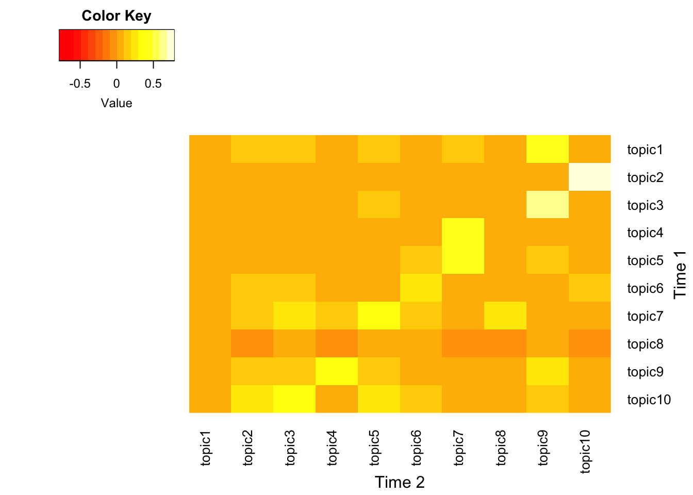
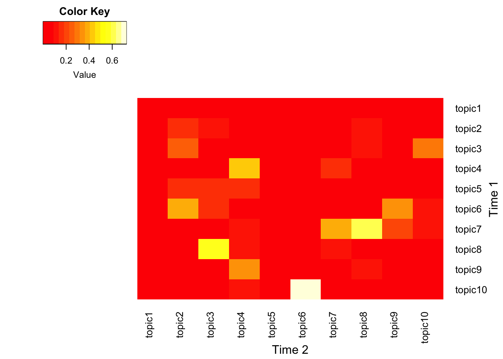
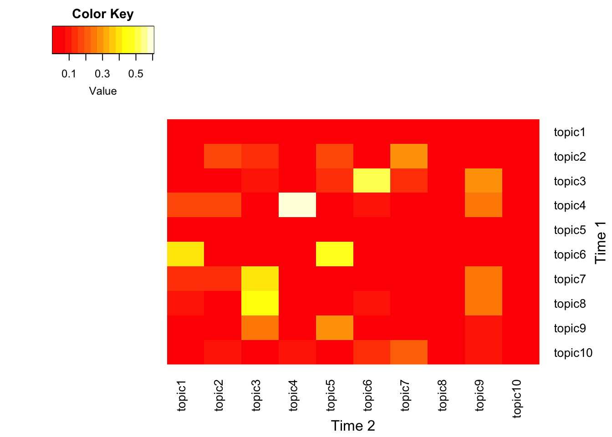
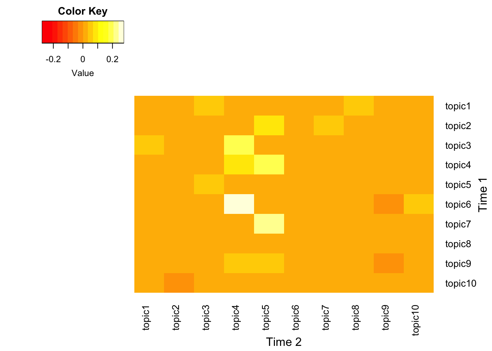
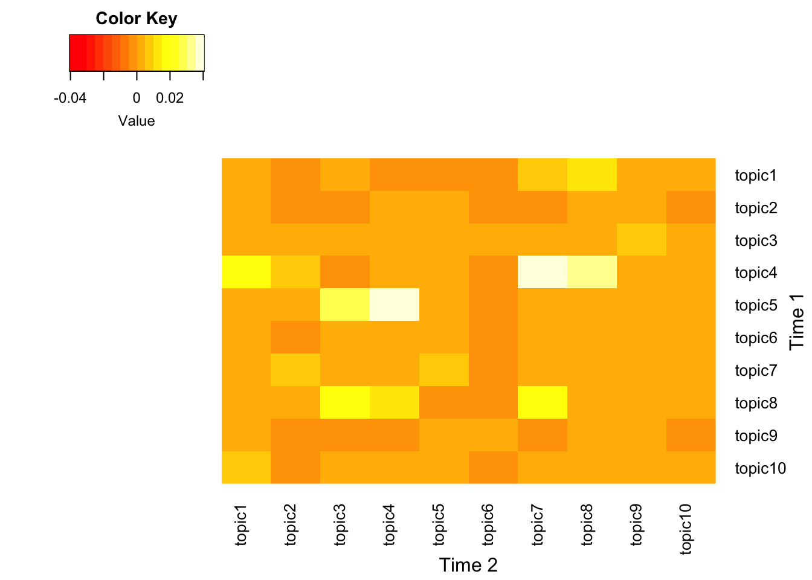
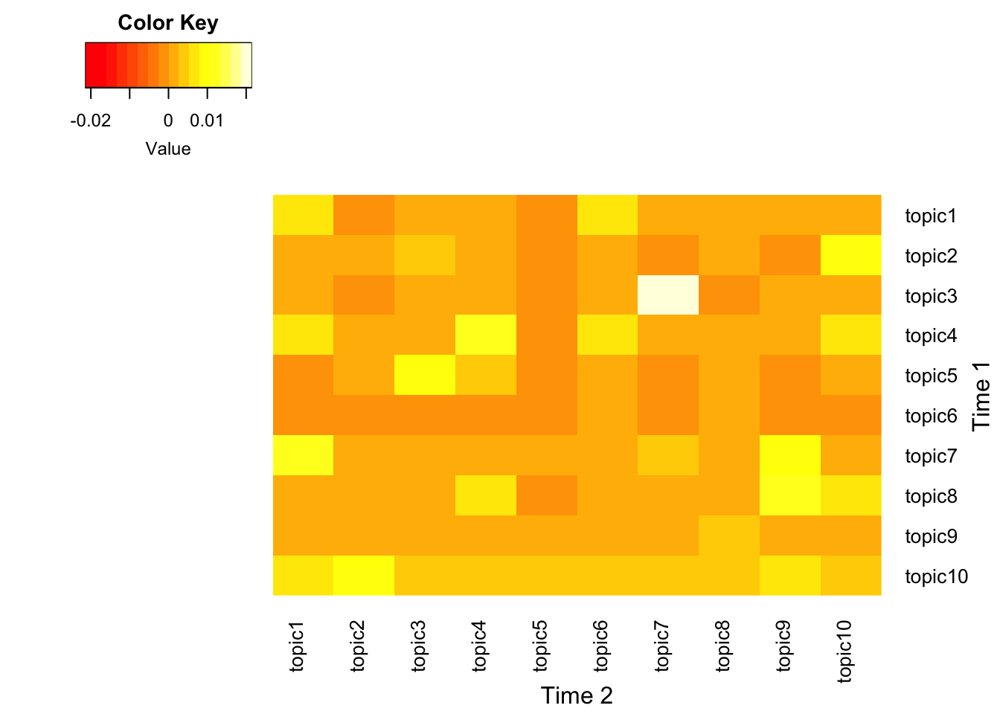
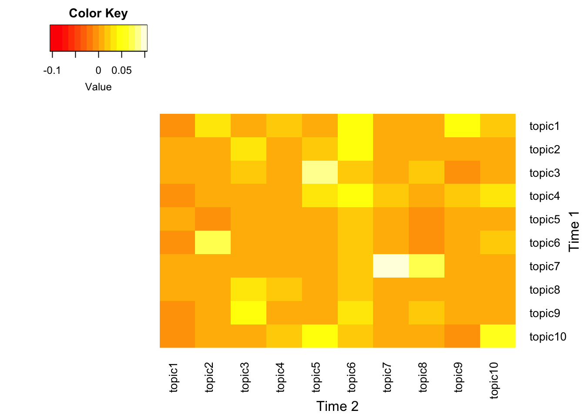

# Load packages
library(plyr)
library(dplyr)
library(tm)
library(gplots)
library(ggplot2)
library(quanteda)
library(readr)
library(seededlda)
library(slam)
library(jsonlite)
library(tm)
library(tidyr)
library(knitr)
light <- readRDS("data/processed/cleaned.RDS")
#Set up the parameters
light_interval <- light %>%
dplyr::mutate(span = as.factor(cut(year,
breaks = c(seq(from = 1945, to = 2022, by = 10), 2022)))) %>%
dplyr::arrange(year)
# I added two additional stop words that aren't captured in the generic stop words dictionary.
mystopwords <- c("will", "must")
custom_stopwords <- c(stopwords("english"), mystopwords)Dynamic UNGDC (updated)
This version does use tf-idf for LDA analysis. For the older version, refer to UNGDC_topic_modeling.qmd. I created a separate version for two reasons. First, some of the functions and options deprecated from the quanteda R package. Earlier version might not be reproducible. Second, the inclusion of tf-idf to generate LDA analysis has a tradeoff. Since it gives less weights to terms that appear frequently across the documents, by definition, tf-idf lowers the correlation between terms over different time window. It is harder to notice a clear linkage between two topics represented by different terms. However, unlike the earlier version that excludes tf-idf, topics are more specific, and substantively meaningful.
- TO DO: Reduce the number of topics from 10 to 5. Tf-idf increased the between-document variation and relatively decreased the commonality across the documents. It became harder to find a common topic, and it reducing the number of topics might help. I also need to implement moving window to produce a smoother transition of topics over time.
Dynamic Topic Modeling for UNGDC
In order to generate LDA topic modeling results for the corpus of UNGD, I split the corpus into different time frames. The entire time span of 1945 until 2022 is split into 8 intervals, with a duration of 10 years.
Term Frequency-Inverse Matrix and Descriptive Data Visualization
- To inspect the data and frequent words across time intervals, below code generates top-20 terms based on the tf-idf scores.
- Input dataset: “data/processed/cleaned.RDS”.
# Function for generating tf_idf and plots.
sapply(levels(light_interval$span), function(i) {
subset_i <- light_interval %>% dplyr::filter(span %in% i)
corpus_subset <- Corpus(VectorSource(subset_i$text))
tdm <- TermDocumentMatrix(corpus_subset,
control = list(weighting = weightTfIdf,
removePunctuation = TRUE,
stemming = TRUE,
removeNumbers = TRUE,
stopwords = TRUE,
removewords = mystopwords))
top_terms <- slam::row_sums(as.matrix(tdm))
# Create a data frame with terms and tfidf values
top_terms_df <- data.frame(term = names(top_terms), tfidf = top_terms)
# Order the terms by tfidf value
top_terms_df <- top_terms_df[order(top_terms_df$tfidf, decreasing = TRUE), ]
# Select the top 20 terms
top_terms_df <- head(top_terms_df, 20)
figure_i <- ggplot(top_terms_df, aes(x = reorder(term, tfidf), y = tfidf)) +
geom_bar(stat = "identity", fill = "skyblue") +
theme_minimal() +
labs(title = "Top 20 Terms by TF-IDF",
x = "Terms",
y = "TF-IDF Score") +
theme(axis.text.x = element_text(angle = 45, hjust = 1))
output_file <- file.path("figs/", paste0("plot_", i, ".png"))
ggsave(output_file, figure_i, width = 8, height = 5, units = "in")
})- dfm function helps remove stop words and perform other preprocessing steps to create a more refined document-feature matrix. Additionally, the subsequent dfm_tfidf function is used to compute TF-IDF (Term Frequency-Inverse Document Frequency) scores, which down-weights terms that appear frequently across documents.
LDA Topic Modeling
In this section, I perform topic modeling using LDA, an unsupervised method to estimate vectors that represent topics within a speech.It assumes that each speech document is a mixture of topics, and each word is attributable to one of the document’s topics.
Current parameters in the below code sets the number of topics as 10, and uses the TF-IDF scores.
In order not to replicate the entire process of LDA modeling, download this folder that contains lda outputs here
[`output/lda/decade_0120_replicate`](https://drive.google.com/drive/folders/1woSqpayZGCozaFe1NoZuEYzdx7zv32wr?usp=share_link).
LDA Generator Updated Function
## New version since dfm() options deprecated within the quanteda package.
lda_generator <- function(corpus, span_levels, num_topics = 10) {
if (!dir.exists(output_dir)) {
dir.create(output_dir, recursive = TRUE)
}
for (i in span_levels) {
subset <- corpus[corpus$span == i, ]
# Use tokens() instead of dfm() for tokenization
subset_tokens <- tokens(subset$text,
remove_numbers = TRUE,
remove_punct = TRUE,
split_hyphens = TRUE) %>%
tokens_wordstem() %>%
tokens_tolower() %>%
tokens_remove(pattern = custom_stopwords) %>%
tokens_compound(pattern = phrase(c("human rights*", "united nations")))
# Apply TF-IDF transformation directly on tokens
subset_tfidf <- dfm(subset_tokens) %>%
dfm_tfidf(scheme_tf = "count", scheme_df = "inverse")
timing <- system.time({
dfm_output_file <- file.path(output_dir, paste0("dfm_", i, ".RDS"))
saveRDS(convert(subset_tfidf, to="data.frame"), dfm_output_file)
tmod_lda <- textmodel_lda(subset_tfidf, k = num_topics)
lda_output_file <- file.path(output_dir, paste0("lda_model_", i, ".RDS"))
saveRDS(tmod_lda, lda_output_file)
})
cat(sprintf("Time taken for %s: %s seconds\n", i, timing[3]))
}
}
# Loop through each decade and save separate LDA results.
span_levels <- levels(light_interval$span)
#lda_generator(light_interval, span_levels)Reading in LDA results
After running the LDA model, I read in each LDA results as a separate element in a list form. Below code prins out top 10 terms associated with each topic in the LDA models for different span levels. Each row represents one semantic topic.
read_lda_models <- function(span_levels, output_dir = "output/lda/decade_0120_replicate/") {
lda_models <- list()
for (i in span_levels) {
lda_output_file <- file.path(output_dir, paste0("lda_model_", i, ".RDS"))
print(lda_output_file)
if (file.exists(lda_output_file)) {
lda_model <- readRDS(lda_output_file)
lda_models[[i]] <- lda_model
cat(sprintf("LDA model for %s successfully loaded.\n", i))
} else {
cat(sprintf("LDA model file for %s not found.\n", i))
}
}
return(lda_models)
}
lda_models <- read_lda_models(span_levels)[1] "output/lda/decade_0120_replicate//lda_model_(1945,1955].RDS"
LDA model for (1945,1955] successfully loaded.
[1] "output/lda/decade_0120_replicate//lda_model_(1955,1965].RDS"
LDA model for (1955,1965] successfully loaded.
[1] "output/lda/decade_0120_replicate//lda_model_(1965,1975].RDS"
LDA model for (1965,1975] successfully loaded.
[1] "output/lda/decade_0120_replicate//lda_model_(1975,1985].RDS"
LDA model for (1975,1985] successfully loaded.
[1] "output/lda/decade_0120_replicate//lda_model_(1985,1995].RDS"
LDA model for (1985,1995] successfully loaded.
[1] "output/lda/decade_0120_replicate//lda_model_(1995,2005].RDS"
LDA model for (1995,2005] successfully loaded.
[1] "output/lda/decade_0120_replicate//lda_model_(2005,2015].RDS"
LDA model for (2005,2015] successfully loaded.
[1] "output/lda/decade_0120_replicate//lda_model_(2015,2022].RDS"
LDA model for (2015,2022] successfully loaded.topic_tables <- function(lda_models, span_levels) {
topic_tables <- list()
for (i in span_levels) {
if (i %in% names(lda_models)) {
lda_model <- lda_models[[i]]
terms <- terms(lda_model, 10)
topic_table <- data.frame(Terms = terms)
topic_tables[[i]] <- topic_table
} else {
cat(sprintf("LDA model for %s not found.\n", i))
}
}
all_topics <- do.call(rbind, topic_tables)
return(all_topics)
}
topic_tables <- topic_tables(lda_models, span_levels)
print(knitr::kable(topic_tables))
| |Terms.topic1 |Terms.topic2 |Terms.topic3 |Terms.topic4 |Terms.topic5 |Terms.topic6 |Terms.topic7 |Terms.topic8 |Terms.topic9 |Terms.topic10 |
|:--------------|:-------------|:------------|:------------|:------------|:------------|:------------|:------------|:------------|:-------------|:-------------|
|(1945,1955].1 |ussr |arab |german |argentin |bolivia |hyderabad |netherland |resumpt |communist |india |
|(1945,1955].2 |soviet |israel |czechoslovak |latin |cuba |egypt |bandung |korea |soviet |australian |
|(1945,1955].3 |yugoslav |palestin |polish |trade |greek |india |african |collect |chines |commiss |
|(1945,1955].4 |atom |jerusalem |soviet |chile |greec |sudan |south |recommend |communism |council |
|(1945,1955].5 |yugoslavia |morocco |germani |uruguay |dominican |egyptian |geneva |independ |china |think |
|(1945,1955].6 |armament |tunisia |people’ |veto |guatemala |pakistan |africa |leader |korea |say |
|(1945,1955].7 |union |jew |poland |american |colombia |el |indonesia |europ |union |veto |
|(1945,1955].8 |prohibit |refuge |weapon |panama |bolivian |salvador |thailand |veto |imprison |soviet |
|(1945,1955].9 |weapon |jewish |hydrogen |venezuela |guatemalan |sudanes |zealand |revis |costa |china |
|(1945,1955].10 |american |franc |european |per |cuban |british |asia |collabor |mainland |arbitr |
|(1955,1965].1 |particip |bantu |malaysia |cambodia |netherland |pakistan |american |african |german |arab |
|(1955,1965].2 |moscow |iceland |zealand |lao |congo |cyprus |cuba |africa |socialist |israel |
|(1955,1965].3 |industri |south |australia |spain |indonesia |turkish |cuban |portug |soviet |palestin |
|(1955,1965].4 |coexist |indian |philippin |communist |irian |kashmir |panama |mali |czechoslovak |egypt |
|(1955,1965].5 |fund |canada |malaya |viet |nigeria |india |guatemala |portugues |albania |algerian |
|(1955,1965].6 |cent |canadian |australian |spanish |berlin |turkey |dominican |somali |romanian |libya |
|(1955,1965].7 |trade |danish |feder |chines |belgian |greek |venezuela |congo |germani |franc |
|(1955,1965].8 |scienc |goa |india |cambodian |indonesian |greec |latin |austrian |byelorussian |libyan |
|(1955,1965].9 |concept |africa |indonesia |pathet |west |nepal |america |cameroon |nato |canal |
|(1955,1965].10 |invest |chairman |manila |royal |want |jammu |paraguay |malagasi |albanian |jordan |
|(1965,1975].1 |like |pakistan |african |imperialist |like |israel |austria |cuba |turkey |haiti |
|(1965,1975].2 |programm |india |ghana |khmer |socialist |arab |spain |iceland |cyprus |oil |
|(1965,1975].3 |nuclear |zealand |rwanda |aggress |soviet |isra |salvador |venezuela |turkish |australia |
|(1965,1975].4 |big |ireland |portug |imperi |german |palestin |italian |cuban |argentina |haitian |
|(1965,1975].5 |neighbour |netherland |uganda |revisionist |mongolian |zionist |el |panama |greec |volta |
|(1965,1975].6 |space |japan |burundi |albania |byelorussian |palestinian |itali |bolivia |argentin |philippin |
|(1965,1975].7 |strategi |burma |africa |albanian |ssr |yemen |gibraltar |zair |peru |price |
|(1965,1975].8 |franc |kashmir |portugues |viet |czechoslovak |israel’ |rica |chile |greek |upper |
|(1965,1975].9 |youth |fiji |kenya |cambodia |ukrainian |aggress |hondura |latin |brazil |food |
|(1965,1975].10 |madam |pacif |oau |chines |europ |iraq |uruguay |dominican |dahomey |australian |
|(1975,1985].1 |malta |soviet |ireland |imperialist |turkey |benin |guinea |pleasur |guatemala |¬ |
|(1975,1985].2 |zionist |japan |panama |vietnames |yemen |burundi |papua |dialog |uganda |barbado |
|(1975,1985].3 |bahama |europ |ecuador |kampuchea |egypt |mali |zealand |cooper |timor |paraguay |
|(1975,1985].4 |itali |german |latin |chines |morocco |rwanda |pacif |program |nicaragua |ghana |
|(1975,1985].5 |iranian |union |bolivia |lao |turkish |seneg |chad |per |guinea |tion |
|(1975,1985].6 |iraqi |socialist |dominican |thailand |pakistan |zair |bangladesh |refuge |hondura |guyana |
|(1975,1985].7 |mediterranean |mongolian |rica |nam |sudan |oau |australia |india |salvador |ment |
|(1975,1985].8 |tobago |poland |costa |viet |arab |kenya |surinam |fortieth |revolutionari |con |
|(1975,1985].9 |libyan |austria |spain |ethiopia |islam |chad |equatori |sea |guatemalan |venezuela |
|(1975,1985].10 |islam |detent |american |romania |isra |mauritania |canada |indian |angola |caribbean |
|(1985,1995].1 |wish |wish |wish |panama |wish |wish |wish |wish |wish |wish |
|(1985,1995].2 |paraguay |co |islam |burundi |guinea |canada |european |saint |cooper |malawi |
|(1985,1995].3 |american |organis |arab |myanmar |pacif |netherland |europ |bahama |boutro |african |
|(1985,1995].4 |latin |program |sri |rwanda |viet |philippin |ukrain |nepal |eighth |chad |
|(1985,1995].5 |bolivia |dialog |iranian |romania |nam |want |albania |caribbean |bosnia |niger |
|(1985,1995].6 |dominican |twelv |lebanon |zair |japan |revolut |belarus |pakistan |herzegovina |swaziland |
|(1985,1995].7 |ecuador |align |lanka |panamanian |equatori |canadian |poland |barbado |somalia |uganda |
|(1985,1995].8 |hondura |namibia |iraqi |belgium |solomon |let |csce |haiti |l993 |kenya |
|(1985,1995].9 |chile |disarma |ireland |canal |zealand |enemi |austria |surinam |fiftieth |benin |
|(1985,1995].10 |costa |drug |tunisia |rwandes |papua |children |croatia |india |npt |angola |
|(1995,2005].1 |outset |outset |outset |outset |outset |outset |outset |outset |outset |outset |
|(1995,2005].2 |african |azerbaijan |island |korea |croatia |marino |trinidad |afghanistan |arab |sri |
|(1995,2005].3 |africa |cyprus |caribbean |korean |european |san |tobago |taliban |iraq |ethiopia |
|(1995,2005].4 |guinea |tajikistan |pacif |nepal |herzegovina |women |belarus |swaziland |israel |lanka |
|(1995,2005].5 |congo |armenia |saint |pakistan |mongolia |sixtieth |slovakia |ecuador |palestinian |eritrea |
|(1995,2005].6 |malawi |turkmenistan |papua |ireland |kosovo |iraq |panama |bolivia |isra |andorra |
|(1995,2005].7 |chad |turkey |bahama |thailand |€ |outcom |haiti |myanmar |lebanon |eritrean |
|(1995,2005].8 |burundi |kazakhstan |barbado |asean |latvia |weapon |mexico |estonia |malta |cuba |
|(1995,2005].9 |liberia |georgia |solomon |monaco |bosnia |document |guatemala |chile |kuwait |truth |
|(1995,2005].10 |uganda |turkish |small |india |bulgaria |uruguay |dominican |paraguay |iraqi |muslim |
|(2005,2015].1 |everi |everi |everi |everi |everi |everi |everi |everi |everi |everi |
|(2005,2015].2 |nepal |pakistan |serbia |japan |mdgs |guinea |island |arab |ecuador |azerbaijan |
|(2005,2015].3 |iceland |iran |fiji |timor |treati |african |sid |yemen |panama |georgia |
|(2005,2015].4 |trinidad |muslim |european |mongolia |g |korea |pacif |kuwait |paraguay |asean |
|(2005,2015].5 |burundi |islam |kosovo |ireland |nuclear |mali |solomon |syrian |marino |kazakhstan |
|(2005,2015].6 |sri |god |bosnia |lest |mediat |somalia |saint |iraq |peru |ukrain |
|(2005,2015].7 |tobago |war |herzegovina |bangladesh |disput |korean |bahama |lebanon |america |afghanistan |
|(2005,2015].8 |canada |nuclear |cyprus |latvia |disarma |sudan |caribbean |palestinian |american |moldova |
|(2005,2015].9 |malawi |want |malta |cambodia |migrat |philippin |grenada |egypt |latin |thailand |
|(2005,2015].10 |zambia |israel |croatia |australia |multilater |bissau |small |libya |bolivia |turkmenistan |
|(2015,2022].1 |distinct |african |israel |distinct |ukrain |india |pacif |bosnia |pandem |korea |
|(2015,2022].2 |peacekeep |mali |syrian |azerbaijan |european |pakistan |island |herzegovina |covid |malaysia |
|(2015,2022].3 |andorra |sudan |iran |armenia |russian |sri |ocean |saint |un |asean |
|(2015,2022].4 |trade |sahel |brazil |trinidad |russia |lanka |solomon |caribbean |vaccin |mongolia |
|(2015,2022].5 |weapon |congo |colombia |tobago |eu |costa |tonga |beliz |75th |thailand |
|(2015,2022].6 |migrant |chad |spain |burundi |ireland |bangladesh |papua |mauritius |marino |kazakhstan |
|(2015,2022].7 |educ |guinea |venezuela |kingdom |georgia |canada |australia |nepal |bhutan |turkmenistan |
|(2015,2022].8 |energi |africa |iraq |morocco |serbia |rica |tanzania |guatemala |kenya |japan |
|(2015,2022].9 |refuge |madagascar |palestinian |arab |europ |kashmir |micronesia |moldova |botswana |kyrgyzstan |
|(2015,2022].10 |sdgs |burkina |lebanon |yemeni |montenegro |muslim |tuvalu |bahama |somalia |tajikistan |Each column in the dataset corresponds to a vector of terms representing a specific topic. However, extracting substantively meaningful topics poses challenges due to several issues. One notable challenge is the variability in the set of terms used to represent the same topic across different time periods. For instance, the topic of international security may be discussed in relation to the Soviet Union and North Korea in earlier time periods, whereas in more recent times, it may be associated with Russia and Ukraine.
Another important problem is identifying related topics over time. There is a difficulty of establishing connections between topics and understanding their evolution across different temporal contexts. Some topics and terms disappear abruptly, while new topics emerge. Identifying the connection between vectors poses a challenge.
Dynamic Topic Modeling
- To address the above mentioned challenges, we refered to existing papers.
"BERTopic Dynamic Topic Modeling"(https://maartengr.github.io/BERTopic/getting_started/topicsovertime/topicsovertime.html)- Greene and cross, 2017 (https://doi.org/10.1017/pan.2016.7)
This generates output for a single pair of time frames
model1<-lda_models[[1]]
model2<-lda_models[[2]]
# phi value is a topic probability of every word
phi1 <- model1$phi
#phi1$topic <- sequence(nrow(phi1))
phi2 <- model2$phi
#phi2$topic <- sequence(nrow(phi2))
# Convert matrices to data frames
phi1_df <- as.data.frame(phi1)
phi2_df <- as.data.frame(phi2)
order_phi1 <- order(colMeans(phi1_df), decreasing = TRUE)
order_phi2 <- order(colMeans(phi2_df), decreasing = TRUE)
# Reorder columns based on the mean
phi1_df <- phi1_df[, order_phi1]
phi2_df <- phi2_df[, order_phi2]
# Identify columns to drop based on colMeans
## Try without dropping
columns_to_drop_phi1 <- colMeans(phi1_df) < 0.00001
columns_to_drop_phi2 <- colMeans(phi2_df) < 0.00001
# Drop identified columns
phi1_df <- phi1_df[, !columns_to_drop_phi1, drop = FALSE]
phi2_df <- phi2_df[, !columns_to_drop_phi2, drop = FALSE]
# Get the union of column names
all_terms <- union(colnames(phi1_df), colnames(phi2_df))
#fill missing values with zeros
phi1_union <- bind_cols(phi1_df, setNames(data.frame(matrix(0, nrow = nrow(phi1_df), ncol = length(setdiff(all_terms, colnames(phi1_df))))), setdiff(all_terms, colnames(phi1_df))))
phi2_union <- bind_cols(phi2_df, setNames(data.frame(matrix(0, nrow = nrow(phi2_df), ncol = length(setdiff(all_terms, colnames(phi2_df))))), setdiff(all_terms, colnames(phi2_df))))
# Reorder columns alphabetically
phi1_union <- phi1_union[, order(colnames(phi1_union))]
phi2_union <- phi2_union[, order(colnames(phi2_union))]
dim(phi1_union)
dim(phi2_union)
cor<-cor(t(phi1_union), t(phi2_union))
heatmap.2(cor,
Rowv = FALSE, Colv = FALSE,
col = heat.colors(256),
trace = "none", # no row/column names
key = TRUE, keysize = 1.5,
density.info = "none", margins = c(5, 5),
cexCol = 1, cexRow = 1, # adjust text size
notecol = "black", notecex = 0.7,
main = "Correlation Matrix",
xlab = "Period 2", ylab = "Period 1",
symkey = FALSE)
order_phi1_union <- order(colMeans(phi1_union), decreasing = TRUE)
phi1_result <- phi1_union[, order_phi1_union]
order_phi2_union <- order(colMeans(phi2_union), decreasing = TRUE)
phi2_result <- phi2_union[, order_phi2_union]
phi1_result_row <- orderBasedOnRow(phi1_union, 1)
phi1_result_long<-phi1_result_row%>%
tidyr::pivot_longer(everything(), names_to="term_1", values_to="probability_1")
phi2_result_row <- orderBasedOnRow(phi2_union, 6)
phi2_result_long<-phi2_result_row%>%
tidyr::pivot_longer(everything(), names_to="term_2", values_to="probability_2")
pair<-bind_cols(phi1_result_long, phi2_result_long)#Function to print out the words
orderBasedOnRow <- function(df, I) {
# Order columns based on the Ith row values
ordered_cols <- order(apply(df, 2, function(x) x[I]), decreasing = TRUE)
# Reorder the data frame columns
ordered_df <- df[, ordered_cols]
ordered_row <- ordered_df[I, 1:10]
return(ordered_row)
}Below function generates heatmaps for a pair of models.
generate_heatmap <- function(model1, model2, correlation_threshold = 0.9) {
phi1 <- model1$phi
phi2 <- model2$phi
phi1_df <- as.data.frame(phi1)
phi2_df <- as.data.frame(phi2)
all_terms <- union(colnames(phi1_df), colnames(phi2_df))
phi1_union <- bind_cols(phi1_df, setNames(data.frame(matrix(0, nrow = nrow(phi1_df), ncol = length(setdiff(all_terms, colnames(phi1_df))))), setdiff(all_terms, colnames(phi1_df))))
phi2_union <- bind_cols(phi2_df, setNames(data.frame(matrix(0, nrow = nrow(phi2_df), ncol = length(setdiff(all_terms, colnames(phi2_df))))), setdiff(all_terms, colnames(phi2_df))))
phi1_union <- phi1_union[, order(colnames(phi1_union))]
phi2_union <- phi2_union[, order(colnames(phi2_union))]
dim(phi1_union)
dim(phi2_union)
cor_matrix <- cor(t(phi1_union), t(phi2_union))
# Heatmap for correlation matrix
heatmap.2(cor_matrix,
Rowv = FALSE, Colv = FALSE,
col = heat.colors(16),
trace = "none", # no row/column names
key = TRUE, keysize = 1.5,
density.info = "none", margins = c(5, 5),
cexCol = 1, cexRow = 1, # adjust text size
notecol = "black", notecex = 0.7,
xlab = "Time 2",
ylab = "Time 1",
symkey = FALSE)
return(list(phi1_union = phi1_union, phi2_union = phi2_union, cor_matrix = cor_matrix))
}Rows with high correlation
# Function to print the ordered rows for each topic with high correlation
print_ordered_rows <- function(phi1_union, phi2_union, cor_matrix, high_corr_indices, correlation_threshold = 0.9) {
# Find indices where correlation is higher than the threshold
high_corr_indices <- which(cor_matrix > correlation_threshold & !is.na(cor_matrix), arr.ind = TRUE)
# Create an empty list to store results
result_list <- list()
# Print the ordered rows for each topic with high correlation
for (i in seq_len(nrow(high_corr_indices))) {
model1_topic <- high_corr_indices[i, 1]
model2_topic <- high_corr_indices[i, 2]
# Print the ordered rows for each model's topic
cat(paste("Model 1 - Topic", model1_topic), "\n")
phi1_result_row <- orderBasedOnRow(phi1_union, model1_topic)
cat(paste("Model 2 - Topic", model2_topic), "\n")
phi2_result_row <- orderBasedOnRow(phi2_union, model2_topic)
# Convert result rows to long format
phi1_result_long <- phi1_result_row %>%
tidyr::pivot_longer(everything(), names_to = "term_1", values_to = "probability_1")
phi2_result_long <- phi2_result_row %>%
tidyr::pivot_longer(everything(), names_to = "term_2", values_to = "probability_2")
# Combine phi1 and phi2 results
pair <- bind_cols(phi1_result_long, phi2_result_long)
# Append the result to the list
result_list[[i]] <- pair
}
# Combine all results into a single dataframe
final_result <- do.call(bind_rows, result_list)
return(final_result)
}Execute functions over pairs
# Loop through pairs of models to generate heatmaps and print results
for (i in 1:(length(lda_models) - 1)) {
model1 <- lda_models[[i]]
model2 <- lda_models[[i + 1]]
result <- generate_heatmap(model1, model2, correlation_threshold = 0.5)
phi1_union <- result$phi1_union
phi2_union <- result$phi2_union
cor_matrix <- result$cor_matrix
# Print ordered rows only if there are high correlations
if (any(cor_matrix > 0.5, na.rm = TRUE)) {
phi1_result <- phi1_union[, order(colMeans(phi1_union), decreasing = TRUE)]
phi2_result <- phi2_union[, order(colMeans(phi2_union), decreasing = TRUE)]
# Call the modified function and pass high_corr_indices as an argument
final_result <- print_ordered_rows(phi1_result, phi2_result, cor_matrix, high_corr_indices, correlation_threshold = 0.5)
print(final_result)
}
}
Model 1 - Topic 3
Model 2 - Topic 9
Model 1 - Topic 2
Model 2 - Topic 10
# A tibble: 20 × 4
term_1 probability_1 term_2 probability_2
<chr> <dbl> <chr> <dbl>
1 german 0.0150 german 0.0138
2 czechoslovak 0.0119 socialist 0.0102
3 polish 0.0113 soviet 0.00986
4 soviet 0.0108 czechoslovak 0.00816
5 germani 0.0101 albania 0.00793
6 people’ 0.00766 romanian 0.00732
7 poland 0.00693 germani 0.00728
8 weapon 0.00632 byelorussian 0.00726
9 hydrogen 0.00619 nato 0.00629
10 geneva 0.00595 albanian 0.00548
11 arab 0.0271 arab 0.0249
12 israel 0.0228 israel 0.0231
13 palestin 0.0129 palestin 0.0155
14 jerusalem 0.0104 egypt 0.0105
15 morocco 0.00949 algerian 0.0101
16 tunisia 0.00899 libya 0.00916
17 jew 0.00821 franc 0.00826
18 refuge 0.00728 libyan 0.00782
19 jewish 0.00635 canal 0.00776
20 franc 0.00500 jordan 0.00729
Model 1 - Topic 8
Model 2 - Topic 3
Model 1 - Topic 10
Model 2 - Topic 6
Model 1 - Topic 7
Model 2 - Topic 8
# A tibble: 30 × 4
term_1 probability_1 term_2 probability_2
<chr> <dbl> <chr> <dbl>
1 african 0.0150 african 0.00885
2 africa 0.00815 ghana 0.00692
3 portug 0.00735 rwanda 0.00661
4 mali 0.00729 portug 0.00620
5 portugues 0.00670 uganda 0.00618
6 somali 0.00661 burundi 0.00593
7 congo 0.00627 africa 0.00530
8 austrian 0.00601 portugues 0.00462
9 cameroon 0.00564 kenya 0.00460
10 malagasi 0.00553 oau 0.00452
# ℹ 20 more rows
Model 1 - Topic 4
Model 2 - Topic 4
# A tibble: 10 × 4
term_1 probability_1 term_2 probability_2
<chr> <dbl> <chr> <dbl>
1 imperialist 0.0162 imperialist 0.0108
2 khmer 0.00847 vietnames 0.0106
3 aggress 0.00749 kampuchea 0.00971
4 imperi 0.00718 chines 0.00956
5 revisionist 0.00666 lao 0.00954
6 albania 0.00659 thailand 0.00947
7 albanian 0.00594 nam 0.00870
8 viet 0.00576 viet 0.00863
9 cambodia 0.00553 ethiopia 0.00833
10 chines 0.00545 romania 0.00801


